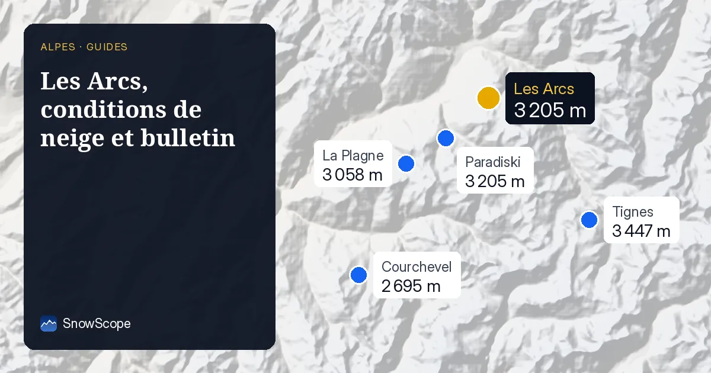
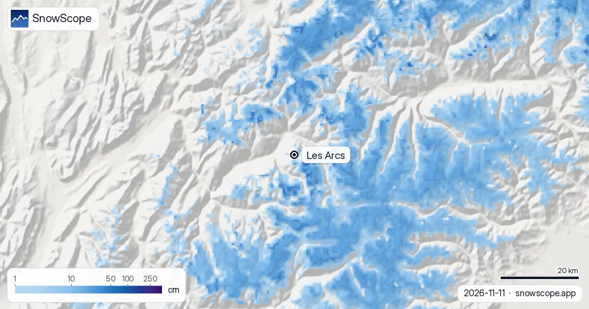
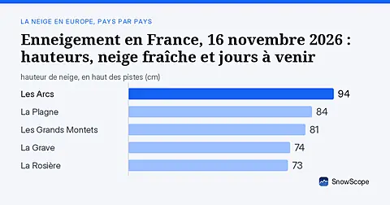

Les Arcs, conditions de neige et bulletin : 34 cm au sommet, une grosse semaine en vue (12 novembre 2026)
Le 12 novembre, les Arcs enregistrent 34 cm à l'Aiguille Rouge (3 205 m), 2 cm à mi-montagne (2 213 m) et pas encore de neige aux villages de base (1 222 m). La semaine à venir est plus importante : SnowScope prévoit 69 cm au sommet et 46 cm à mi-montagne d'ici le 19 novembre, le premier gros apport de la saison.
Consultez les prévisions neige en temps réel pour Les Arcs sur l'application SnowScopeHauteurs de neige, alertes poudreuse et carte 3D, gratuitement.

Où est la neige maintenant et où elle sera
La neige de début novembre s'est concentrée en altitude. À l'Aiguille Rouge, 34 cm se sont accumulés depuis fin octobre. Mi-montagne n'en compte que 2 cm, et le fond de vallée reste sec. Ce schéma est normal : en novembre type, la base n'a presque rien, mi-montagne affiche environ 25 cm, et le sommet atteint 73 cm.
La semaine prochaine, la neige descendra la montagne. Les prévisions indiquent 11 cm rien qu'aux 24 prochaines heures au sommet, avec 46 cm au total à mi-montagne et 69 cm au sommet en fin de semaine. Cet apport remontera plus haut vers Arc 2000 et les pentes intermédiaires, bien que les villages en bas voient encore surtout du sol nu.
Comment cela se compare avec les novembre passés
Sur les 46 derniers hivers, novembre aux Arcs est maigre en basse altitude et bien fourni en haut. La base ne compte généralement que 6 cm en fin de mois. À mi-montagne, 25 cm est typique. En altitude, 73 cm est la médiane. L'hiver dernier (2025-26) a atteint 100 cm à la base et 212 cm à mi-montagne en fin de saison, donc les Arcs produisent de la neige de façon régulière.
Les prévisions entrantes porteraient les conditions proches du normal fin novembre à mi-montagne en quelques jours. Au sommet, c'est bien au-delà de ce que décembre livre habituellement (157 cm en fin de mois).

Quelles semaines sont les plus fiables pour les skieurs
Si vous prévoyez de revenir aux Arcs plus tard cet hiver, mi-montagne est un bon pari à partir de janvier. En 9 hivers sur 10 du passé, 21 semaines ont enregistré au moins 50 cm à cette altitude. La semaine 10 (début mars) est quasi certaine d'avoir une bonne couverture, avec une profondeur type de 167 cm. Au sommet, la saison est encore plus longue : la bonne neige arrive début mars et persiste jusqu'en mai.
Avril est généralement le mois le plus profond au sommet (315 cm typique), mais la base et mi-montagne culminent en février (68 cm et 150 cm). C'est une station où le terrain en haute altitude subit le moins la fonte.
Lire les prévisions avec prudence
Ce sont les estimations de SnowScope pour la zone cartographiée, pas les mesures de la station météo de la station. Les prévisions se mettent à jour à chaque run météo et peuvent varier de 10 à 20 cm. La neige de début de saison sur les pentes exposées au sud fond ou se tasse vite, donc les hauteurs réelles de ski peuvent être inférieures aux chiffres.
Les 48 remontées et 168 km de terrain couvrent 1 983 m de vertical, donc les conditions varient fortement. Le secteur de l'Aiguille Rouge en haut aura une couche utilisable en premier ; les pistes basses auront besoin de quelques semaines d'apports supplémentaires. Le vent peut aussi créer des plaques minces et des accumulations à n'importe quelle altitude, même où la prévision l'exclut.
Ce qu'il faut surveiller pour l'ouverture et la sécurité
Les dates d'ouverture des stations sont fixées par l'exploitant, pas seulement par la profondeur de neige. SnowScope vous dit où est la neige ; il ne confirme pas si les remontées ou les pistes sont ouvertes. Vérifiez directement auprès des Arcs l'état des remontées cette semaine.
Avant de partir hors-piste une fois le terrain ouvert, consultez le bulletin d'estimation du risque d'avalanche de Météo-France. Les coulées de début de saison peuvent être importantes car les pentes portent plus de neige qu'habituellement et des couches faibles se forment dans le manteau tassé.
Conseils aux skieurs
- Surveillez les prévisions du sommet et mi-montagne les cinq prochains jours : elles vont bouger. Les estimations de 69 cm et 46 cm changeront probablement de ±10 à 15 cm avec les nouvelles données météo.
- Les rochers et plaques nues transparaissent encore à travers la neige fine du début. Privilégiez les pistes en altitude ou les pistes damées jusqu'à ce que mi-montagne atteigne plus de 50 cm.
- Les pentes exposées au sud à mi-montagne se ramolliront ou se tasseront plus vite que ne le prévoit la prévision. Le terrain exposé au nord garde mieux la profondeur en novembre.
- Les villages de base et les remontées de l'Arc basse auront besoin de 2 à 3 semaines de neige supplémentaire avant d'offrir une couverture continue. Concentrez-vous sur Arc 2000 et le secteur de l'Aiguille Rouge cette semaine.
- Avant de partir hors-piste, lisez le bulletin d'estimation du risque d'avalanche de Météo-France et comprenez les couches faibles du début de saison.
À propos de ces chiffres
Les hauteurs de neige des stations sont la neige la plus épaisse sur le haut du domaine à la date indiquée ; ce sont des estimations pour une zone, pas une mesure en un point. Les prévisions peuvent changer. Consultez toujours le bulletin d'avalanche officiel avant le hors-piste.
Bulletins d'avalanche officiels: Météo-France – Bulletin d'estimation du risque d'avalanche
Citer ce bulletin
Pour la recherche, l'enseignement ou la presse : chiffres et graphiques réutilisables librement sous CC BY 4.0 avec cette citation.
SnowScope (2026), Les Arcs, conditions de neige et bulletin : 34 cm au sommet, une grosse semaine en vue (12 novembre 2026), https://snowscope.app/blog/fr/2026/11/les-arcs-snow-conditions-report-12-november-2026.html, consulté le 2026-11-12
SnowScope (Atlas Labs). (2026, November 12). Les Arcs, conditions de neige et bulletin : 34 cm au sommet, une grosse semaine en vue (12 novembre 2026). SnowScope snow reports. https://snowscope.app/blog/fr/2026/11/les-arcs-snow-conditions-report-12-november-2026.html
BibTeX
@misc{snowscope2026lesarcssnowconditionsrep,
author = {{SnowScope (Atlas Labs)}},
title = {Les Arcs, conditions de neige et bulletin : 34 cm au sommet, une grosse semaine en vue (12 novembre 2026)},
year = {2026},
month = nov,
howpublished = {\url{https://snowscope.app/blog/fr/2026/11/les-arcs-snow-conditions-report-12-november-2026.html}},
note = {Published 2026-11-12 09:44 UTC; accessed 2026-11-12}
}· CC BY 4.0 · Méthodes, données et outils →
Les Arcs : neige et température selon l'altitude, cet hiver vs l'hiver dernier (outils) →
Suivre Les Arcs
Gratuit : un message quand la neige arrive, et la météo chaque matin.
Autres bulletins neige

France ou Suisse ? Où la neige est meilleure le 16 novembre. Couverture, neige fraîche, stations et jours à venir en France le 16 novembre.

130 stations françaises ont du manteau neigeux le 20 novembre. Le massif du Mont-Blanc a reçu 297 cm en trois jours, avec d'autres chutes attendues.